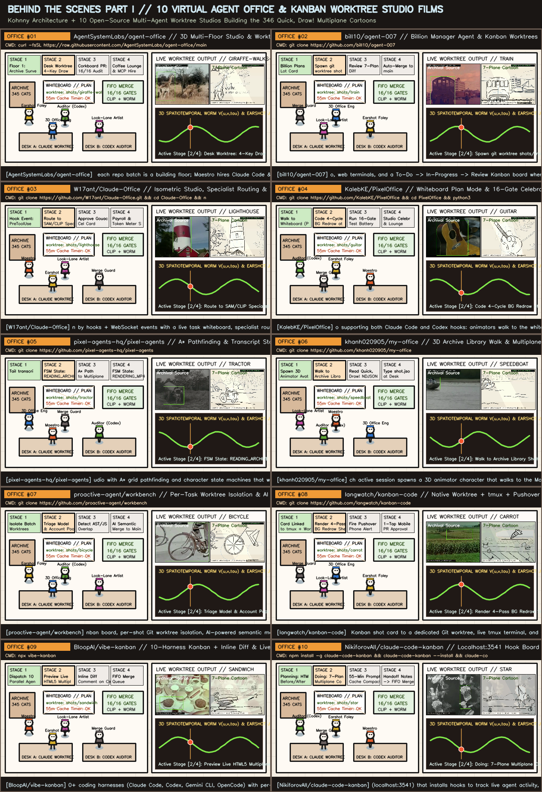
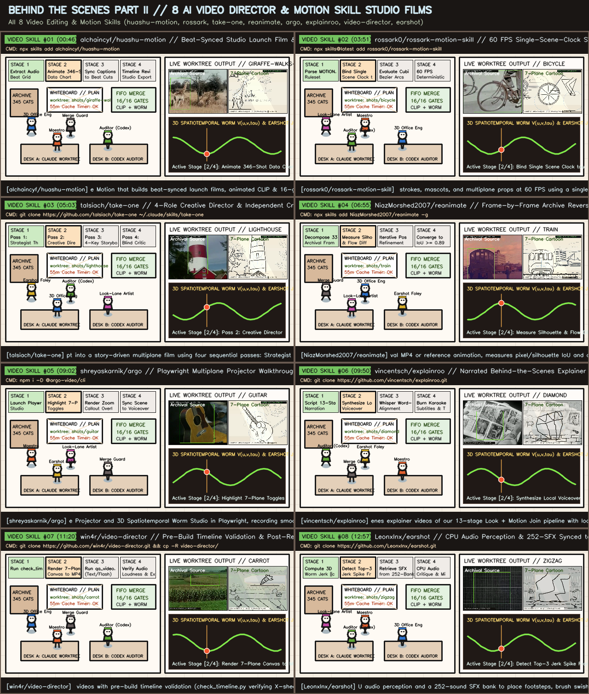

Behind the Scenes: How Our Multi-Agent Virtual Studio Built All 346 Cartoons
Inspired by John Sorrentino’s Kohnny (I Turned Claude Code Into a Video Game) and the 8 AI Video Director Skills (Insane GitHub Repos To Actually 10x Claude Video Editing), this page showcases our Master Behind-the-Scenes Documentary Film, an interactive 3D/Isometric Virtual Agent Office + Kanban Git Worktree Pipeline, and 18 bespoke animated studio films (“make for each”): 10 Virtual Agent Office & Worktree films plus 8 AI Video Director Skill films.
MASTER BEHIND-THE-SCENES STUDIO DOCUMENTARY (18 CHAPTERS)
Download Master MP4 ↗
Plays all 18 Behind-the-Scenes Studio Process Films back-to-back with beat-synced marimba/projector Foley audio: Part I covers the 10 Virtual Agent Office & Kanban Worktree architectures; Part II covers the 8 AI Video Director & Motion Skills.
LIVE INTERACTIVE 3D VIRTUAL AGENT OFFICE & 55-MIN CACHE COMPACTOR
Prompt Cache: 54:12 / 55:00
Kohnny / Agent-Office / Agent-007 Worktree Orchestration
Live Kanban + Isolated Git Worktree Pipeline (Planning → Doing → Cross-Model Review → FIFO Merge)
1. PLANNING (HTML MOCKUP)
worktree/plan-clip-twin
Maestro + Look-Lane Artist
Generates before/after HTML mockup & Bouleau 14-line armature plan before writing code.
Maestro + Look-Lane Artist
Generates before/after HTML mockup & Bouleau 14-line armature plan before writing code.
2. DOING (ISOLATED WORKTREE)
worktree/shots-batch6-346
3D Office Eng + Argon RL
Synthesizes 7-plane
3D Office Eng + Argon RL
Synthesizes 7-plane
SCION-UniqueWorld-v9 cels, 4-key living BG boil & 33f X-sheet.
3. CROSS-MODEL REVIEW & FIX
worktree/audit-16-gates
Auditor (Codex Reviewing Claude)
Verifies 16/16 gates, 0 X-ray bleeds, gap-corrected CLIP cosine &
Auditor (Codex Reviewing Claude)
Verifies 16/16 gates, 0 X-ray bleeds, gap-corrected CLIP cosine &
qa_video.py.
4. FIFO MERGE & 55m COMPACT
main @ a52cfd7 (346/346 Done)
Merge Guard + Earshot Foley
Single-file FIFO merge queue prevents conflicts; auto-compacts handoff notes at 55 min.
Merge Guard + Earshot Foley
Single-file FIFO merge queue prevents conflicts; auto-compacts handoff notes at 55 min.
Part I // 10 Open-Source Virtual Agent Office & Kanban Worktree Studio Films
10 Bespoke Behind-the-Scenes Studio Films (“Make for Each” Virtual Office Repository)

Part II // 8 AI Video Editing & Motion Director Skill Films
8 Bespoke Behind-the-Scenes Studio Films (“Make for Each” Video Editing Skill Repository)
